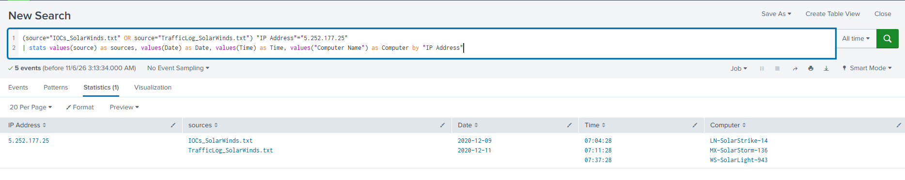
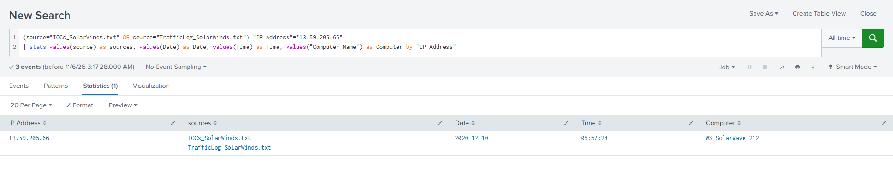
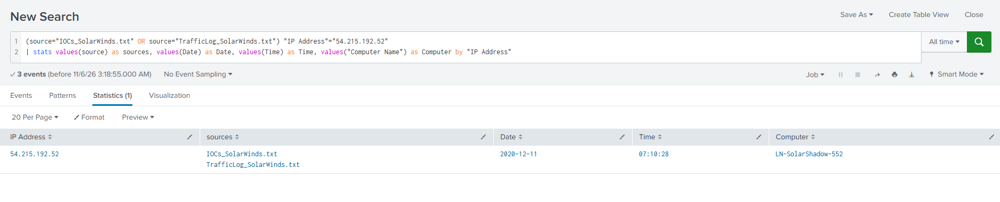
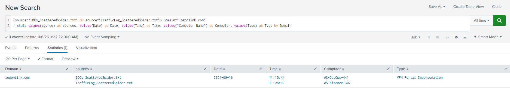
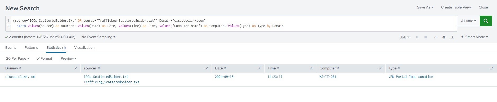
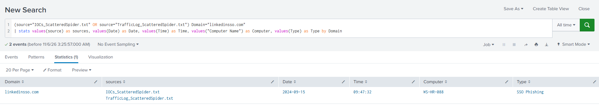

Acting as a SOC analyst for PathCode Inc., a fictional company from the CodePath CYB102 Threat Hunt Lab, I hunted for evidence of two real-world attacks in the company's outbound proxy logs. Each investigation paired a threat intelligence feed with a set of network logs: the SolarWinds supply chain compromise against 2020 traffic, and Scattered Spider's phishing infrastructure against 2024 traffic. The job was to find which PathCode machines talked to known bad infrastructure, when, and what that says about the company's defenses.
Objective
- Load threat intel feeds and proxy logs into Splunk and correlate them with SPL
- Identify every indicator that appears in both the feed and PathCode's traffic
- Record the date, time and computer behind each hit
- Check each matched indicator's current reputation on VirusTotal
- Compare the two incidents and assess PathCode's security posture
Method
The technique is event correlation. Search both sources at once, group by the field they share, and keep only the values that show up in more than one source. If an IP or domain lives in the threat feed and the proxy log, a PathCode machine reached out to it.
(source="IOCs_SolarWinds.txt" OR source="TrafficLog_SolarWinds.txt")
| stats values(source) as sources, values(Date) as Date, values(Time) as Time,
values("Computer Name") as Computer by "IP Address"
| where mvcount(sources) > 1
The catch is that the shared field changes between datasets. The SolarWinds feed and
logs join on IP Address. The Scattered Spider feed is a list of
domains, and its proxy log records the destination domain, so that hunt joins on
Domain instead.
(source="IOCs_ScatteredSpider.txt" OR source="TrafficLog_ScatteredSpider.txt")
| stats values(source) as sources, values(Date) as Date, values(Time) as Time,
values("Computer Name") as Computer, values(Type) as Type by Domain
| where mvcount(sources) > 1For the screenshots below, I filtered each search to a single indicator so every result row shows both source files side by side, which is the proof of a match.
Investigation 1: SolarWinds (2020)
In December 2020, attackers slipped malicious code into a legitimate SolarWinds software update. Organizations that installed it unknowingly opened a line to attacker-controlled servers. Three IPs from the SolarWinds IOC list turned up in PathCode's 2020 proxy logs.
| IP | Date and time | Computer |
|---|---|---|
5.252.177[.]25 | 2020-12-09 07:04:28 | WS-SolarLight-943 |
| 2020-12-09 07:37:28 | MX-SolarStorm-136 | |
| 2020-12-11 07:11:28 | LN-SolarStrike-14 | |
13.59.205[.]66 | 2020-12-10 06:57:28 | WS-SolarWave-212 |
54.215.192[.]52 | 2020-12-11 07:10:28 | LN-SolarShadow-552 |

5.252.177[.]25 was contacted by three different machines over three days, the strongest sign of ongoing communication in this dataset.

13.59.205[.]66, a single connection from WS-SolarWave-212.

54.215.192[.]52, a single connection from LN-SolarShadow-552.
Investigation 2: Scattered Spider (2024)
Scattered Spider leans on social engineering instead of custom malware. They call employees posing as IT helpdesk, push them toward fake SSO and VPN login pages, and harvest credentials or MFA approvals. Three of their domains showed up in PathCode's 2024 proxy logs, spread across four departments.
| Domain | Type | Date and time | Computer |
|---|---|---|---|
logonlink[.]com | VPN portal impersonation | 2024-09-16 11:15:44 | WS-DevOps-441 |
| 2024-09-16 11:28:09 | WS-Finance-307 | ||
ciscoacclink[.]com | VPN portal impersonation | 2024-09-15 14:23:17 | WS-IT-204 |
linkedinsso[.]com | SSO phishing | 2024-09-15 09:47:32 | WS-HR-088 |

logonlink[.]com, a fake VPN portal, reached by two machines 13 minutes apart.

ciscoacclink[.]com, another fake VPN portal, from an IT workstation.

linkedinsso[.]com, an SSO phishing page, from an HR workstation.
VirusTotal check
Threat intel ages, so I looked up every matched indicator to see how it reads today.
| Indicator | Campaign | Vendors flagging |
|---|---|---|
5.252.177[.]25 | SolarWinds | 11 |
13.59.205[.]66 | SolarWinds | 6 |
54.215.192[.]52 | SolarWinds | 9 |
logonlink[.]com | Scattered Spider | 13 |
linkedinsso[.]com | Scattered Spider | 12 |
ciscoacclink[.]com | Scattered Spider | 7 |
Analysis
From December 9 to 11, 2020, five PathCode systems connected to three IPs tied to the SolarWinds compromise, including 5.252.177[.]25, which was contacted by WS-SolarLight-943, MX-SolarStorm-136 and LN-SolarStrike-14. From September 15 to 16, 2024, four systems across HR, IT, DevOps and Finance reached three Scattered Spider phishing and fake VPN domains, including logonlink[.]com, which was visited by WS-DevOps-441 and WS-Finance-307. Both attacks succeeded through the same mechanism, outbound connections to known bad infrastructure, years apart. That tells me PathCode isn't filtering outbound traffic against threat intel, and the fix is to feed those lists into the proxy or DNS layer so connections like these get blocked instead of found after the fact.
Tools used
- Splunk Enterprise in Docker, CSV upload, Search & Reporting
- SPL:
ORacross sources,stats values(),mvcount(),where - VirusTotal for current indicator reputation
Key takeaway
The correlation search is simple, but reading the data first is what makes it work. The same SPL found a supply chain attack and a social engineering campaign once the join field matched the data. The harder part is judgment: a match tells you a machine talked to something bad, and the analyst's job is to explain which machines, when, and what it means for the organization.